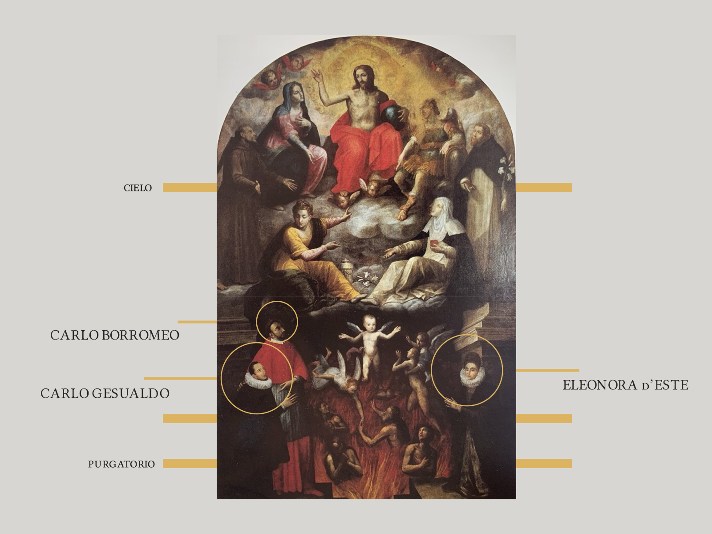
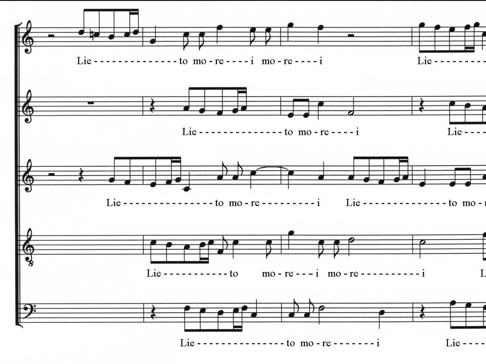
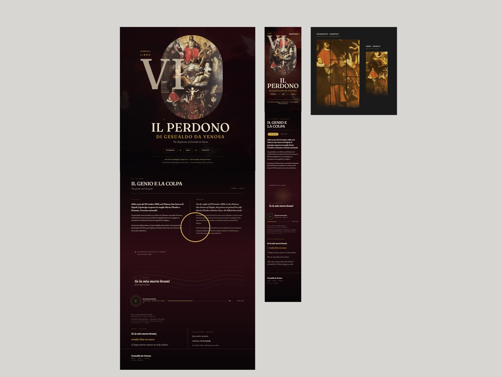
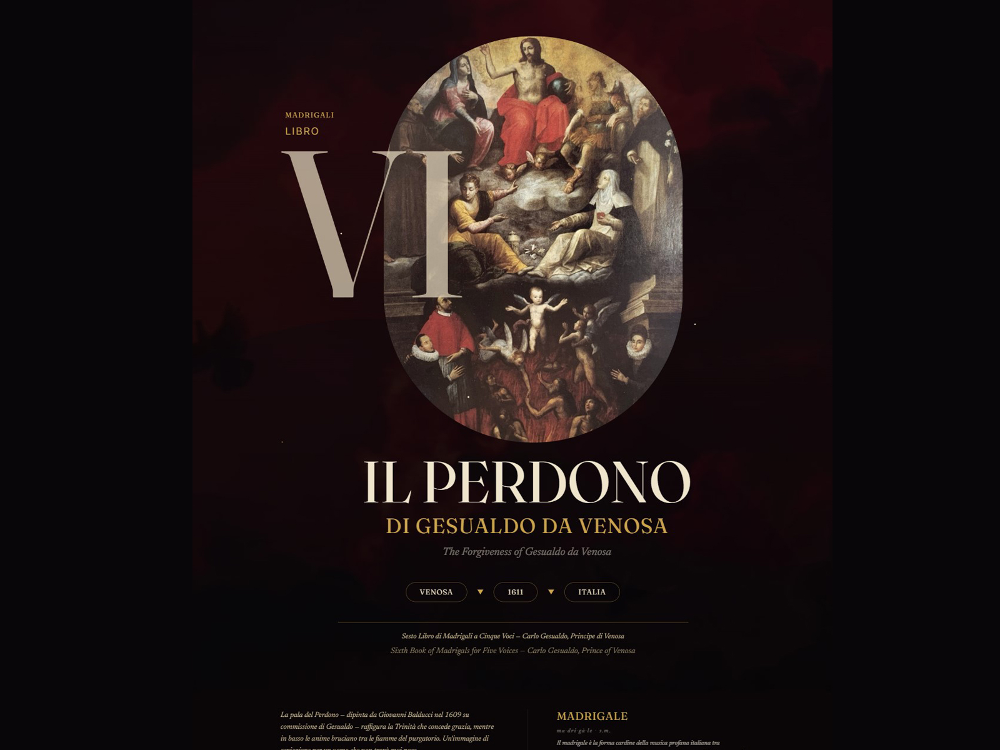

Wonder
Madrigale
An interactive exploration of music, memory and historical interpretation.

Explore the Live Experience
A fully interactive experience available online.
↗ Explore the Live ExperienceProject Question
Can music preserve a human life?
Music & Cultural Memory
Interactive Music Experience
The Story
Wonder Madrigale began with a fascination for Carlo Gesualdo, Prince of Venosa—a composer remembered for both his extraordinary music and the tragedy that marked his life.
Rather than recounting a historical event, the project explores how music can reveal the emotional complexity of a human being. Through an interactive experience, visitors discover a story where sound, history and visual interpretation become part of the same narrative.

Research
The project combines historical research, musicology and visual storytelling.
I explored the life of Carlo Gesualdo, the tradition of the Italian madrigal and historical sources to understand the cultural context in which his compositions emerged.
Special attention was given to Se la mia morte brami, whose emotional intensity became the narrative centre of the experience.
Lyrics, historical references and visual materials were carefully curated to transform historical documentation into an accessible digital narrative.

Visual Language
The visual language draws inspiration from seventeenth-century painting and sacred iconography.
Dark tones, deep crimson clouds and warm golden light create an atmosphere suspended between memory, spirituality and psychological tension.
Interactive typography allows words from the madrigal to emerge with the music, transforming listening into a visual experience rather than a simple audio player.

Creative Direction
Gather references, evidence and source material until the project has a grounded point of departure.
Identify the patterns, tensions and details that deserve to become the project's point of view.
Shape the connection between sound, story, visual language and interaction.
Translate the idea into a visual language that gives form, rhythm and hierarchy to the story.
Build the assets, interactions and technical structure needed to carry the system into experience.
Bring the work to its audience through an experience that invites exploration, connection and understanding.
Outcome
Originally created for the Wonder Challenge, the project became an exploration of how music, interface design and historical research can coexist within a single digital experience.
Rather than presenting information, Wonder Madrigale invites visitors to slow down, listen and experience history through emotion.

History can be heard.
Skills
Research Continues
Wonder Madrigale is part of an ongoing investigation into cultural memory and interpretative design.
Together with Atlas of Forgotten Queens and TimeMap, it explores how historical research can become an interactive cultural experience.